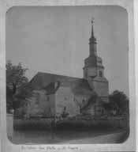

|

Kirche von Holleben

|


Das über 1000 Jahre
alte Dorf wurde bereits 890 im Zehntverzeichnis des Klosters St. Wigberti
zu Hersfeld als Hunlevaburg erwähnt. Urkundlich wird Holleben aber erst
979 genannt, als Kaiser Otto II. den Burgwartbezirk Holleben gegen das
Kloster Memleben tauscht.
Holleben war früher ein bedeutender Ort, da er an der alten Handelsstraße,
der einzigen hochwasserfreien Straße zwischen Halle und Merseburg lag.
Judenzoll, Fährgerechtigkeit und mehrere Schenken machten es zu einem
Großdorf mit Markt und Rathaus.
1540 besaß Holleben 56 Feuerstätten und 1618 550 Einwohner. Während der
Zeit des 30-jährigen Krieges raffte die Pest und der Krieg drei Viertel
der Bevölkerung hin.
In dem einst reinen Bauerndorf wandelte sich die Erwerbstätigkeit der
Einwohner im Laufe des 20. Jahrhunderts besonders durch die
Chemieindustrie der Buna- und Leunawerke. Das wiederum brachte nach der
Wiedervereinigung Deutschlands große Arbeitslosigkeit unter die
Bevölkerung.
Durch den Zusammenschluss von vier Gemeinden gehört unser Ort seit 1995 zu
der Verwaltungsgemeinschaft "Westliche Saale-Aue".
Mitten im Dorf
befindet sich eines der ältesten Wassermühlen ihrer Art in Deutschland,
deren Begründer unbekannt, aber vom Jahre 1000 her ist ihr Vorhandensein
durch eine Urkunde belegt, in der Mönchen der Besitz der Mühle bestätigt
wird.
Ebenso alt wie das Dorf ist die Kirche romanischen Ursprungs, die im
Wechsel der Jahrhunderte und den entsprechenden Baustilen erweitert wurde.
Die im Ortsteil Beuchlitz befindliche Kirche entstand im 15. Jahrhundert,
das historische Herrenhaus mit Muschelgrotte, wo zurzeit mit
Renovierungsarbeiten begonnen wird, wurde im 16. Jahrhundert erbaut.


 |